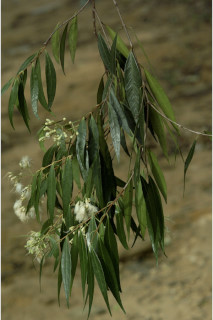
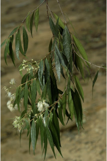
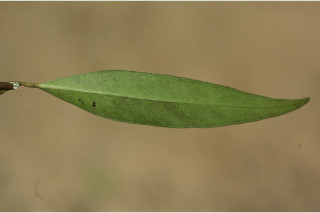
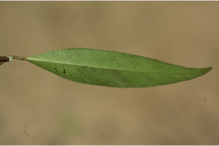
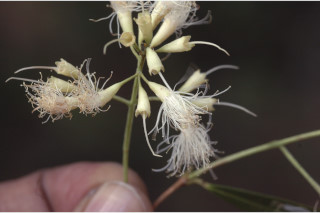
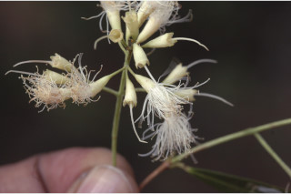

Trees up to 5 m tall.
5 ಮೀ. ಎತ್ತರದವರೆಗೆ ಬೆಳೆಯುವ ಮರಗಳು.
Trees up to 5 m tall.
மரங்கள் 5 மீ. உயரம் வரை வளரக்கூடியது.
Bark brownish, smooth.
ತೊಗಟೆ ಕಂದು ಬಣ್ಣದ ಛಾಯೆ ಹೊಂದಿದ್ದು ನಯವಾಗಿರುತ್ತದೆ.
Bark brownish, smooth.
மரத்தின் பட்டை ப்ரவுன் நிறமானது, வழவழப்பானது.
Young branchlets subterete, glabrous.
ಎಳೆ ಕಿರುಕೊಂಬೆಗಳು ಉಪ-ದುಂಡಾಗಿದ್ದು ರೋಮರಹಿತವಾಗಿರುತ್ತದೆ.
Young branchlets subterete, glabrous.
சிறியநுனிக்கிளைகள் குறுக்குவெட்டுத் தோற்றத்தில் வளையமானது, உரோமங்களற்றது.
Leaves simple, opposite, decussate; petiole 0.5-0.7 cm long, canaliculate above, glabrous; lamina 4-8.5 x 0.6-1.4 cm, linear-lanceolate, apex gradully acute to acuminate, base acute to attenuate, margin entire, pellucid gland dotted, glabrous beneath, coriaceous; midrib slightly canaliculate; secondary_nerves many, oblique; intramarginal nerve present; tertiary_nerves admedially ramified.
ಎಲೆಗಳು ಸರಳವಾಗಿದ್ದು ಅಭಿಮುಖವಾಗಿ ಜೋಡನೆಗೊಂಡಿದ್ದು ಕಾಂಡದ ಎರಡೂ ಕಡೆ ಎದುರು ಬದರಿನ ಲಂಬ ಸಾಲಿನಲ್ಲಿರುತ್ತವೆ;ತೊಟ್ಟುಗಳು 0.5-0.7 ಸೆಂ.ಮೀ. ಉದ್ದಹೊಂದಿದ್ದು ಮೇಲ್ಭಾಗದಲ್ಲಿ ಕಾಲುವೆಗೆರೆ ಸಮೇತವಿದ್ದು ರೋಮರಹಿತವಾಗಿರುತ್ತವೆ;ಪತ್ರಗಳು 4-8.5X0.6-1.4 ಸೆಂ.ಮೀ.ನ ಗಾತ್ರವಿದ್ದು ರೇಖಾತ್ಮಕ-ಭರ್ಜಿಯ ಆಕಾರ ಹೊಂದಿದ್ದು ಬರ ಬರುತ್ತಾ ಚೂಪಾಗುವ ಮಾದರಿಯಿಂದ ಹಿಡಿದು ಕ್ರಮೇಣ ಚೂಪಾಗುವ ರೀತಿಯವರೆಗಿನ ತುದಿ, ಚೂಪಾದುದರಿಂದ ಹಿಡಿದು ಒಳಬಾಗಿದ ರೀತಿಯವರೆಗಿನ ಬುಡ, ನಯವಾದ ಅಂಚನ್ನು ಹೊಂದಿರುತ್ತವೆ, ಪತ್ರಗಳು ಪ್ರಕಾಶ ಭೇಧ್ಯ ರಸಗ್ರಂಥಿ ಚುಕ್ಕೆಗಳ ಸಮೇತವಿದ್ದು ತಳಭಾಗದಲ್ಲಿ ರೋಮರಹಿತವಾಗಿರುತ್ತವೆ ಮತ್ತು ತೊಗಲನ್ನೋಲುವ ಮೇಲ್ಮೈ ಹೊಂದಿರುತ್ತವೆ; ಮಧ್ಯ ನಾಳ ಕೊಂಚವಾಗಿ ಕಾಲುವೆಗೆರೆಯನ್ನು ಹೊಂದಿರುತ್ತದೆ;ಎರಡನೇ ದರ್ಜೆಯ ನಾಳಗಳು ಹೆಚ್ಚಿನ ಸಂಖ್ಯೆಯಲ್ಲಿದ್ದು ಓರೆಯಾಗಿರುತ್ತವೆ;ಅಂತರ ಅಂಚಿನ ನಾಳಗಳು ಇರುತ್ತವೆ;ಮೂರನೇ ದರ್ಜೆಯ ನಾಳಗಳ ಕವಲುಗಳು ಅಕ್ಷದ ಕಡೆಗಿರುತ್ತವೆ .
Leaves simple, opposite, decussate; petiole 0.5-0.7 cm long, canaliculate above, glabrous; lamina 4-8.5 x 0.6-1.4 cm, linear-lanceolate, apex gradully acute to acuminate, base acute to attenuate, margin entire, pellucid gland dotted, glabrous beneath, coriaceous; midrib slightly canaliculate; secondary_nerves many, oblique; intramarginal nerve present; tertiary_nerves admedially ramified.
இலைகள் தனித்தவை, எதிரடுக்கமானவை, குறுக்குமறுக்கானவை; இலைக்காம்பு 0.5-0.7 செ.மீ. நீளமானது, இலைக்காம்பு குறுக்குவெட்டுத் தோற்றத்தில் கேனாலிகுலேட், உரோமங்களற்றது; இலை அலகு 4-8.5 x 0.6-1.4 செ.மீ., கோட்டு-ஈட்டி வடிவானது, அலகின் நுனி சீராக கூரியது முதல் அதிக்கூரியது, அலகின் தளம் கூரியது முதல் அட்டனுவேட், அலகின் விளிம்பு முழுமையானது, ஒளிபுகும் சுரப்பி புள்ளிகளுடையது, உரோமங்களற்றது, கோரியேசியஸ்; மையநரம்பு மேற்புறத்தில் அலகின் பரப்பைவிட சிறிது பள்ளமானது; இரண்டாம் நிலை நரம்புகள் எண்ணற்றவை, சாய்ந்தவை; விளிம்பு நரம்பு (இண்ட்ராமார்ஜினல் நரம்பு) கொண்டது; மூன்றாம் நிலை நரம்புகள் அட்மீடியல்லி ராமிபைடு.
Inflorescence axillary and terminal cymes; flowers small, white; calyx tube funnel shaped, ca. 0.5 cm long; pedicel ca. 0.2 cm long, slender.
ಪುಷ್ಪಮಂಜರಿ ಅಕ್ಷಾಕಂಕುಳಿನಲ್ಲಿ ಮತ್ತು ತುದಿಯಲ್ಲಿನ ಮಧ್ಯಾರಂಭಿ ಮಾದರಿಯವು;ಹೂಗಳು ಸನ್ಣ ಗಾತ್ರದಲ್ಲಿದ್ದು ಬಿಳಿ ಬಣ್ಣದಲ್ಲಿರುತ್ತವೆ; ಪುಷ್ಪ ಪಾತ್ರೆಯ ಕೊಳವೆ 0.5 ಸೆಂ.ಮೀ. ಉದ್ದವಿದ್ದು ಪ್ರಣಾಳ ರೂಪದಲ್ಲಿರುತ್ತವೆ;ಹೂ ತೊಟ್ಟುಗಳು 0.2 ಸೆಂ.ಮೀ. ಉದ್ದವಿರುತ್ತವೆ;
Inflorescence axillary and terminal cymes; flowers small, white; calyx tube funnel shaped, ca. 0.5 cm long; pedicel ca. 0.2 cm long, slender.
மஞ்சரி இலைக்கோணங்களில் காணப்படும் மற்றும் மஞ்சரி தண்டின் நுனியில் காணப்படும் சைம் வகை; மலர்கள் சிறியவை, வெள்ளை நிறமானது; புல்லி இதழ்கள் புனல் போன்றது, 0.5 செ.மீ. நீளமானது; மலர்காம்பு 0.2 செ.மீ. நீளமானது, மெல்லியது.
Berry, crowned with calyx segments; seed one.
ಬೆರ್ರಿ ಫಲಗಳು ಮುಕುಟದಲ್ಲಿ ಪುಷ್ಪ ಪಾತ್ರೆಯ ಎಸಳುಗಲ ಸಮೇತವಿರುತ್ತವೆ.
Berry, crowned with calyx segments; seed one.
முழுச்சதைகனி (பெர்ரி), நிரந்தரமான புல்லி இதழ்களுடையவை; ஒரு விதையுள்ள கனி.
 



 

 
